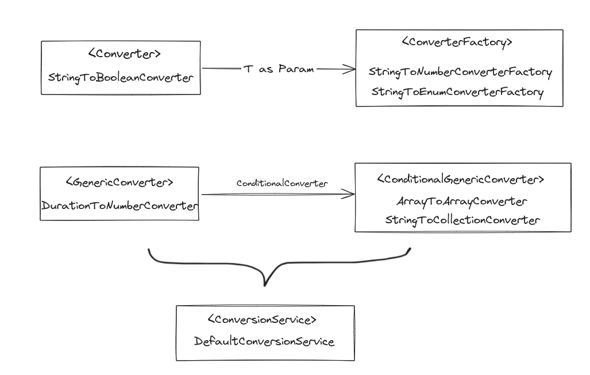

验证、数据绑定和类型转换#
验证#
Spring 提供 Validator 接口来验证对象，如下的例子：
supports(Class): 这个 Validator 可以验证提供的 Class 的实例吗？validate(Object, Errors): 验证给定的对象，如果出现验证错误，则用给定的Errors对象登记这些错误。
public class PersonValidator implements Validator {
/**
* This Validator validates only Person instances
*/
public boolean supports(Class clazz) {
return Person.class.equals(clazz);
}
public void validate(Object obj, Errors e) {
ValidationUtils.rejectIfEmpty(e, "name", "name.empty");
Person p = (Person) obj;
if (p.getAge() < 0) {
e.rejectValue("age", "negativevalue");
} else if (p.getAge() > 110) {
e.rejectValue("age", "too.darn.old");
}
}
}
数据绑定#
数据绑定可以将用户输入绑定到目标对象，比如：
`User Input` --`DataBinder`--> `Domain Model`。
BeanWrapper提供了设置和获取属性值（单独或批量）、获取属性描述符、以及查询属性是否可读或可写的功能。BeanWrapper 通常不直接由应用程序代码使用，而是由 DataBinder 和 BeanFactory 使用。
BeanWrapper company = new BeanWrapperImpl(new Company());
// setting the company name..
company.setPropertyValue("name", "Some Company Inc.");
// ... can also be done like this:
PropertyValue value = new PropertyValue("name", "Some Company Inc.");
company.setPropertyValue(value);
// ok, let's create the director and tie it to the company:
BeanWrapper jim = new BeanWrapperImpl(new Employee());
jim.setPropertyValue("name", "Jim Stravinsky");
company.setPropertyValue("managingDirector", jim.getWrappedInstance());
// retrieving the salary of the managingDirector through the company
Float salary = (Float) company.getPropertyValue("managingDirector.salary");
Spring使用 PropertyEditor 的概念来实现 Object 和 String 之间的转换。比如：
在Bean上设置属性是通过使用 PropertyEditor 实现完成的
在Spring的MVC框架中，解析HTTP请求参数是通过使用各种 PropertyEditor 实现完成的。
Spring有许多内置的 PropertyEditor 实现：
类 |
说明 |
|---|---|
|
字节数组的编辑器。将字符串转换为其相应的字节表示。默认由 |
|
将代表类的字符串解析为实际的类，反之亦然。当没有找到一个类时，会抛出一个 |
|
用于 |
|
集合的属性编辑器，将任何源 |
|
|
|
可定制的属性编辑器，用于任何 |
|
将字符串解析为 |
|
单向属性编辑器，可以接受一个字符串并产生（通过中间的 |
|
可以将字符串解析为 |
|
可以将字符串解析为 |
|
可以将字符串（格式为 |
|
trim 字符串的属性编辑器。可选择允许将空字符串转换为 |
|
可以将一个 URL 的字符串表示解析为一个实际的 |
如需注册其他的自定义 PropertyEditors，可以使用：
使用
ConfigurableBeanFactory接口的registerCustomEditor()方法使用特殊的Bean工厂后处理器
CustomEditorConfigurer注入
PropertyEditorRegistrar后，使用registerCustomEditor方法（推荐）
类型转换#
core.convert 是一个通用类型转换系统。它提供了统一的 ConversionService API 以及强类型 Converter SPI（Service Provider Interface），用于实现从一种类型到另一种类型的转换逻辑。
Spring 容器使用该系统来绑定 bean 属性值。此外，Spring 表达式语言 (SpEL) 和 DataBinder 都使用此系统来绑定字段值。例如，当 SpEL 需要将 Short 强制为 Long 来完成 expression.setValue(Object bean, Object value) 尝试时， core.convert 系统会执行强制转换。

字段格式化#
Formatter SPI#
为支持解析和打印本地化字段值，引入Formatter SPI。
public interface Formatter<T> extends Printer<T>, Parser<T> {}
public interface Printer<T> {
String print(T fieldValue, Locale locale);
}
public interface Parser<T> {
T parse(String clientValue, Locale locale) throws ParseException;
}
使用注解驱动格式化#
@NumberFormat(style=Style.CURRENCY)
private BigDecimal decimal;
Spring 默认提供 @NumberFormat 和 @DateTimeFormat 要自定义类似注解，需要实现AnnotationFormatterFactorySPI。
需要注册新 formatters 和 converters ，可以使用 FormatterRegistry。
注册多个 FormatterRegistry 可以使用 FormatterRegistrar。
如使用 Java 配置全局日期格式为 yyyyMMdd：
@Configuration
public class AppConfig {
@Bean
public FormattingConversionService conversionService() {
// Use the DefaultFormattingConversionService but do not register defaults
DefaultFormattingConversionService conversionService =
new DefaultFormattingConversionService(false);
// Ensure @NumberFormat is still supported
conversionService.addFormatterForFieldAnnotation(
new NumberFormatAnnotationFormatterFactory());
// Register JSR-310 date conversion with a specific global format
DateTimeFormatterRegistrar dateTimeRegistrar = new DateTimeFormatterRegistrar();
dateTimeRegistrar.setDateFormatter(DateTimeFormatter.ofPattern("yyyyMMdd"));
dateTimeRegistrar.registerFormatters(conversionService);
// Register date conversion with a specific global format
DateFormatterRegistrar dateRegistrar = new DateFormatterRegistrar();
dateRegistrar.setFormatter(new DateFormatter("yyyyMMdd"));
dateRegistrar.registerFormatters(conversionService);
return conversionService;
}
}
Java Bean 验证#
使用约束#
可以再 POJO 字段直接使用 @Constraint 注解， 如
public class PersonForm {
@NotNull
@Size(max=64)
private String name;
@Min(0)
private int age;
}
也可以直接注入 Validator，手动调用校验。
@Service
public class MyService {
@Autowired
private Validator validator;
}
配置自定义约束#
Bean 验证由两部分组成
一个
@Constraint注解，声明了约束及其可配置的属性。jakarta.validation.ConstraintValidator接口的一个实现，实现约束的行为。
默认情况下，LocalValidatorFactoryBean 配置了一个 SpringConstraintValidatorFactory，使用Spring来创建 ConstraintValidator 实例。因此自定义 ConstraintValidators 可以像其他 Spring Bean 一样使用依赖性注入。
@Target({ElementType.METHOD, ElementType.FIELD})
@Retention(RetentionPolicy.RUNTIME)
@Constraint(validatedBy=MyConstraintValidator.class)
public @interface MyConstraint {
}
public class MyConstraintValidator implements ConstraintValidator {
@Autowired;
private Foo aDependency;
// ...
}